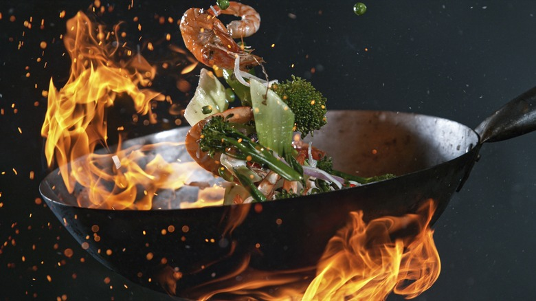

중식
중식은 중국의 다양한 지역 요리를 기반으로 한 음식으로, 풍부한 재료와 다채로운 맛을 자랑합니다.
대표적인 중식 요리로는 짜장면, 짬뽕, 볶음밥, 탕수육, 마라탕 등이 있으며, 각각 고유의 조리법과 특유의 맛을 가지고 있습니다.
< 돌아가기

짬뽕
매콤한 해산물 국수
6,000￦ ~ 13,000￦

탕수육
튀김 돼지고기와 새콤달콤 소스
11,000￦ ~ 16,000￦